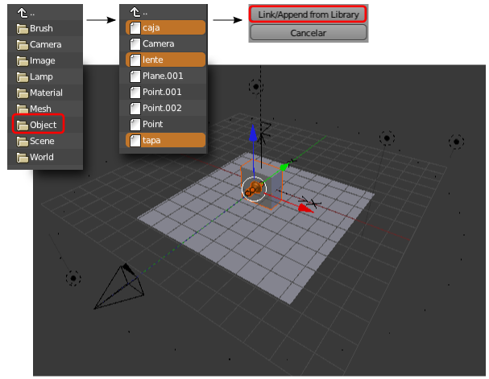

Importar objetos
En otro .blend tenemos el objeto que queremos enviar al archivo con el 3DNP. En nuestro caso se trata de la cámara oscura con una textura mapeada en el cubo del cuerpo.
No es necesario abrir ese archivo porque la importación la hacemos desde 3DNP Blender.blend con el que venimos trabajando. Damos por hecho que se han eliminado el cubo de ejemplo y los textos "3D" y "NP".
Para la importación usamos Archivo/Añadir y nos vamos al archivo .blend en el que se encuentra la cámara oscura, accedemos a su contenido y entramos en la sección Object; una vez dentro escogemos con "Shift" (para acumular), los tres objetos que conforman la cámara oscura (en nuestro caso se llaman caja, lente y tapa). Nada más que confirmamos la orden pulsando el botón Link/Append from Library estos objetos aparecen en la escena de 3DNP. Además, como en el archivo original el cubo de la cámara está situado en el origen de coordenadas nos podemos despreocupar porque aparece en el sitio adecuado para nuestros fines).
Ya que ese objeto tiene asignada una imagen mapeada debemos activar el modo de sombreado Textura.
Estamos listos para generar todas las imágenes.